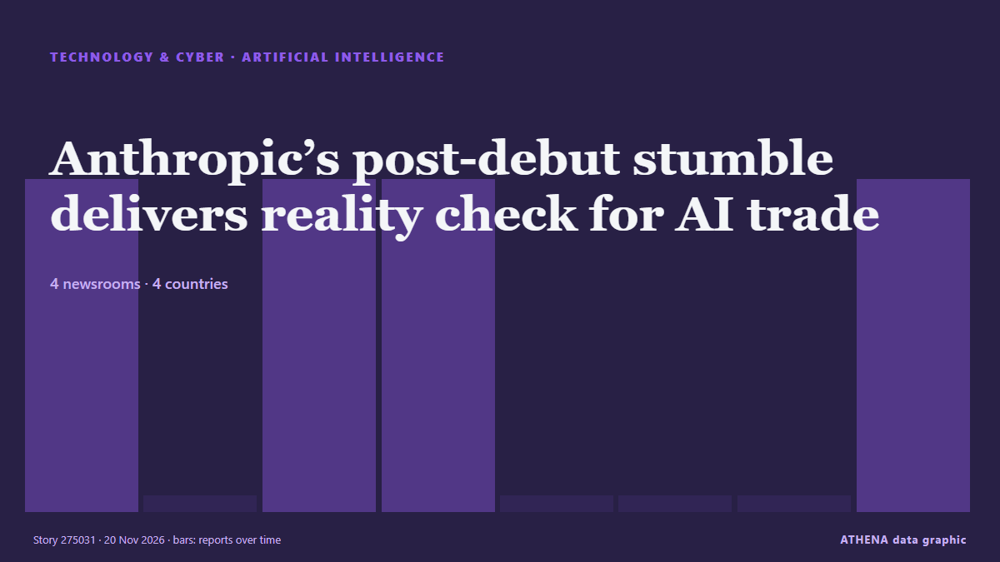

Artificial intelligence
SponsoredPresented by  Cybernetics and Artificial Intelligence Lab Welcome to the Cybernetics and Artificial Intelligence Laboratory, established at the Department of Business Administration of the National and Kapodistrian University of Athens. The lab is headed by Professor Dimitrios Thomakos. The lab aims to do research that can be published in top venues. Our research uses tools and methods of Artificial Intelligence, and lies in the following areas: - Forecasting - Decision making - Cyber security - Finance We are always looking forward to collaborating with exceptional students!
Cybernetics and Artificial Intelligence Lab Welcome to the Cybernetics and Artificial Intelligence Laboratory, established at the Department of Business Administration of the National and Kapodistrian University of Athens. The lab is headed by Professor Dimitrios Thomakos. The lab aims to do research that can be published in top venues. Our research uses tools and methods of Artificial Intelligence, and lies in the following areas: - Forecasting - Decision making - Cyber security - Finance We are always looking forward to collaborating with exceptional students!
| 9 Nov | 0 |
|---|---|
| 10 Nov | 0 |
| 11 Nov | 0 |
| 12 Nov | 0 |
| 13 Nov | 0 |
| 14 Nov | 0 |
| 15 Nov | 0 |
| 16 Nov | 1 |
| 17 Nov | 0 |
| 18 Nov | 7 |
| 19 Nov | 8 |
| 20 Nov | 8 |
| 21 Nov | 0 |
| 22 Nov | 0 |

Anthropic’s post-debut stumble delivers reality check for AI trade
Anthropic could offer an early read on investor appetite for the sector after a turbulent stretch, with a sustained decline likely to deepen concerns over lofty valuations and massive AI spending. from Rappler
Anthropic sinks by 10% in premarket after record IPO debut
Anthropic PBC's shares declined by almost 10% in Friday's premarket after investors' enthusiasm about the artificial intelligence (AI) company's historic initial public offering (IPO) cooled. from AzerNews
Trump, Xi agreed that military AI decisions should involve humans, Bessent says
The US Treasury Secretary was speaking to CNBC after returning from a meeting between Trump and Xi in China. from The Straits Times
Anthropic CEO Dario Amodei Says Cancer Will Be a Relic in 10 Years. Researchers Say He’s Missing 1 Key Factor
The co-founder thinks AI will help make cancer and other deadly diseases extinct by 2036. from Inc.
Anthropic surges in market debut after biggest IPO on record, despite fears that AI is running amok
The artificial intelligence giant Anthropic rose sharply Thursday after making the biggest public stock offering ever, at one point s. from Mainichi (English)
UAE jumps six places to rank fifth globally in UN digital government index
UAE advances to fifth globally in UN E-Government Development Index. from Gulf News
What Anthropic’s record $81 billion IPO means for Gulf investors
The creator of the Claude chatbot has raised $81.3 billion in the world's largest IPO, and Gulf investors have emerged as major players. from Al-Monitor
Anthropic’s blockbuster debut tests Wall Street’s faith in AI boom
ANTHROPIC notched a valuation of about $2 trillion in its Nasdaq debut on Thursday, edging past SpaceX’s June… from BusinessWorld
Who are Anthropic’s 7 co-founders? Meet the former OpenAI colleagues now worth billions
The company counts physicists, a former journalist and an associate of the pope among its guiding lights The paper fortunes of Anthropic’s seven co-founders reached a total of more than $180bn on… from Guardian Business
Dutch watchdog advises against AI camera glasses because of safety risks
Warning follows investigation into 6 pairs of glasses; 2 underwent extensive testing in simulated real-life situations involving human safety. from Anadolu Agency (English)
From Apple to Anthropic: World's 10 most valuable companies after blockbuster IPO
Where does Williams F1 backer Anthropic rank in the most valuable F1 sponsors after its November 2026 IPO? from The Race
$20 billion each! Meet the Anthropic co-founders who struck gold with IPO
Anthropic's recent IPO has created significant wealth for its founders and staff, with over 5,100 employees seeing their equity exceed $1 million and around 600 becoming centi-millionaires. from Times of India
Anthropic pulled off the biggest IPO ever. What that means, by the numbers
It ends its first trading day at US$97.17 a share, over 17% higher than its offering price. from The Business Times
Meta to price Muse Charm gadget at $300, The Information reports
Unnerved employees are worried the AI agent could be mixing up conversations and exposing users’ data. from The Straits Times
The seven Anthropic founders who are about to become multi-billionaires
The AI company behind Claude is about to sell its shares on the US stock market - making its founders very rich. from BBC News
Samsung says neocloud debt poses limited risk to AI industry growth
Samsung Electronics rejected concerns that debt-financed expansion by neocloud providers could trigger a broader slowdown in artificial intelligence investment, saying these companies account for… from DigiTimes Asia
AI lab Anthropic sets stock market record with $81 billion IPO
Anthropic becomes the first "pure play" AI lab to go public, with an eye-watering $1.5 trillion valuation, a bellwether moment amid growing concerns of a financial bubble in the sector. from France 24 English
Anthropic raises record $81.3 billion in blockbuster IPO
Anthropic ANT.O has raised $81.3 billion in the largest stock-market debut on record after upsizing its offering, valuing the Claude chatbot maker at $1.5 trillion in a deal that defies concerns… from Cyprus Mail
GTA 6 Review: Grand Theft Auto VI is staggering in scale but still grounded in reality
Grand Theft Auto VI is so vast in scale, it has rewritten the rules for what a game can be. from The Scotsman